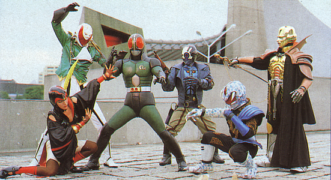
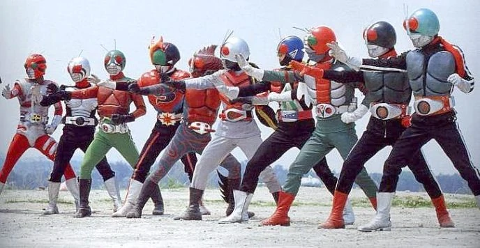

Having his body altered and the Kingstone called the "Stone of the Sun" implanted into him, Kohtaro gained the power to transform into Kamen Rider Black, a candidate for the position of Creation King. From his Kingstone and physical enhancements, Kohtaro is immune to several threats such as: mind control, drugs, the Mirror World, and time paradoxes
Go BookingAfter being ejected into space by the Crisis Empire, Kohtaro's Kingstone evolved giving him the power to use the more powerful and versatile Black RX form. From the mystical powers granted by the Kingstone, Kohtaro is instantly able to adapt in any life-threatening situations he may face, attaining Roborider form, Biorider form, and even cheating death itself.
Go BookingRoborider is a form where Black RX 's armor becomes bulky and more robotic-like, with black and yellow coloring and his Sunriser resembles a gearbox. During his duration as the "Prince of Sadness", both his strength and defense are enhanced. He is also unharmed by explosions or projectile weapons. The only downsides are that he moves slower than Black RX as well as possessing semi-robotic movement, slowing his reaction time.
Go BookingBiorider is a form where Black RX's armor becomes much sleeker, blue and silver all over and his Sunriser belt resembles a single Kingstone one. During his duration as the "Prince of Anger", his speed is enhanced and is more favorable to fight in water. He can also transform with speed of up to 1000m into gel for escaping traps or attacking enemies while not getting hurt in the process, as he is near invincible while in his gel form. Out of it, however, RX sacrifices armor strength, leaving him more vulnerable to heat and powerful attacks.
Go Booking